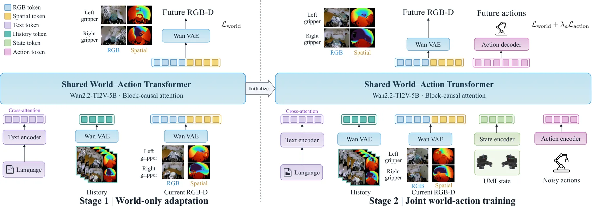
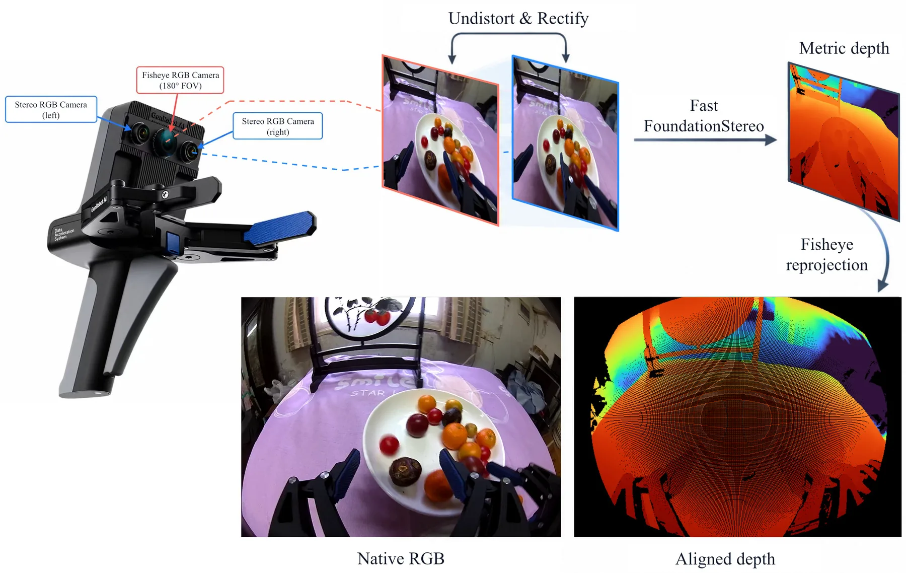
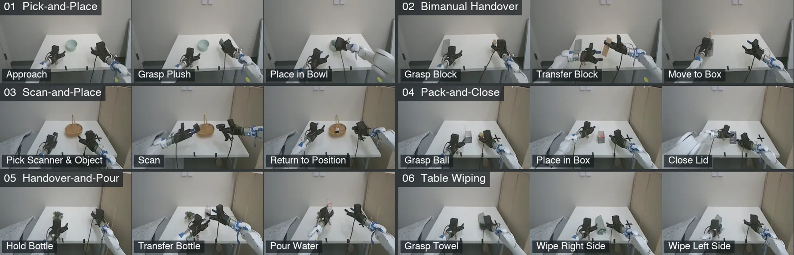

Spatial-UMI-Dream：把度量深度写进世界状态，UMI 操作策略的跨本体成功率从 60.8% 到 85.0%
Spatial-UMI-Dream: Scaling World Action Models with Metric Geometry for UMI Manipulation
把深度当成“要预测的世界状态”而不是“额外输入”：每只夹爪三目相机取中/右两目做极线校正 + Fast FoundationStereo 得视差，按标定转成度量 Z 深度，再映射回原始鱼眼坐标；深度用固定上下界（0.01–1.5 m）+ Turbo 色映射编码成三通道图，与 RGB 拼成 2×2 的双夹爪画布（每格 160×160，共 320×320），整体交给同一个 Wan2.2 VAE 编码，不加 3D 主干、不加深度专用分支。训练两段：world-only 适配（30k 步）→ 联合 world-action（30k 步，λ_a=1）。真机 85.0% vs π0.5 60.8%；仿真域内 79.10% vs 74.45%；换光照 73.35%、联合偏移 72.15%。
real-world SR gain
in-domain SR
joint-shift SR
RGB-only drop
作者、单位与技术谱系 · Research context
作者与单位
研究脉络
- UMI（Universal Manipulation Interface）方法基座关系：提供了“人手持便携夹爪采集示范、与具体机器人解耦”的数据范式，本文全部数据与观测接口都建立在这一范式上[论文 §II-C（引用 [1]）]
- RDT2（UMI 数据规模化 → 零样本跨本体）方法上游关系：同一批作者（Sihan Liu）推进“把 UMI 数据规模化以获得零样本跨本体泛化”，本文把这条路线从纯 RGB 扩到 RGB-D[论文 §I 与 §IV-A2（引用 [4]）]
- World Action Models（联合预测未来观测与动作）范式上游关系：把“视频生成先验”改造成策略：动作不是单独回归，而是与未来画面一起生成，从而让动作与场景演化对齐[论文 §II-A]
- Spatial-UMI-Dream（本篇推进）本篇推进关系：在 Wan2.2-TI2V-5B 上把 RGB-D 画布、两段训练与 20 任务跨本体基准合起来，给出“几何显式化”对迁移的定量贡献[论文 §III 与 §IV]
合作网络
- USC Physical Superintelligence LabWeiduo Yuan / Ze Yuan / Liang Heng / Zhenyu Zhao → Yue Wang（USC）关系：共同署名（同一实验室）[论文首页署名]
- Sihan Liu（CMU）Sihan Liu → RDT2（参考文献 [4]，第一作者同名）关系：同一署名人的前作与本篇基线[论文 §IV-A2 与参考文献 [4]]
- Weiduo Yuan × Yue Wang 的合作链BEVCALIB（CoRL 2025）/ ICIR → Spatial-UMI-Dream关系：团队前作的技术延续（几何感知 → 几何显式化的操作策略）[论文参考文献 [15][18]]
- GenRobot DAS UMI 采集系统GenRobot DAS（三目夹爪） → 605 小时 RGB-D 语料关系：硬件平台依赖（数据由该系统的中/右目双目产生）[论文 §III-A1]
作者单位、共同第一作者、末位署名与参考文献对应关系均取自论文首页与正文；Sihan Liu 与 RDT2 第一作者同名一事标为“有来源的解读”。论文未声明导师/师生关系，此处不写。
方法本质拆解 · What actually changed
是不是微调？
不是从零训练，也不是只做下游微调。主干初始化自 Wan2.2-TI2V-5B，先在 605 小时 RGB-D UMI 语料上做两段预训练（world-only 适配 30k 步、world-action 联合 30k 步，批 192，24 张 RTX PRO 6000），再分别针对真机（22.5k 步、8 卡）与 RoboTwin-UMI（10k 步、8 卡）微调。文本编码器、图像编码器与视频 VAE 全程冻结，只训扩散 transformer 与动作分支；world-only 阶段动作编码器/解码器保留随机初始化但不训练，第二阶段才开始学。
有没有额外约束？
新增的硬约束集中在几何量纲上：深度用数据集共享的固定界 d_min=0.01 m、d_max=1.5 m 归一化，保证不同场景、不同批次的同一物理距离映射到同一编码值；双夹爪布局固定为 2×2（左列 RGB、右列几何，上行左爪、下行右爪），每格 160×160，训练与部署完全一致；深度必须与中目鱼眼 RGB 逐像素对齐（含畸变），否则监督会错位。监督侧是视频潜变量与动作序列各自的加权 flow matching，联合阶段用 λ_a=1 平衡两路损失。
推理/后端到底做了什么？
推理是单次前向的扩散采样：按 block-causal 方式逐块生成 RGB-D 潜块与动作块，动作解码成 20 维相对动作（左右各 Δp 三维、6D 旋转、夹爪开度），chunk 长 24。没有全局 bundle adjustment、没有额外几何后端、没有测试时优化。真正跑在机器人上的附加步骤只有两处工程补偿：示范侧的 IK + ManiSkill 回放过滤（训练前一次性完成），以及部署侧的夹爪一阶响应反解，把指令提前 δ 步并放大，抵消夹爪延迟。
方法本质是什么？
本质是把“尺度”从隐变量变成可监督的世界状态：双目把深度变成有物理单位的观测，固定界的颜色编码把它塞进冻结的视频 VAE，2×2 画布把两个夹爪的几何与外观放进同一时空网格，于是 flow matching 的下一帧预测就自动变成“下一帧几何是否自洽”的监督。它改变的不确定性是“夹爪到目标的距离与相对布局”——这部分原本要靠 RGB 表观去猜；没有改变的是策略接口（仍是末端相对动作）与主干结构（没有 3D 编码器、没有点云分支）。换句话说，它用“预测几何”替代了“反推几何”，把几何自洽性做成了施加在表示层而非后端的约束。
输入是双夹爪鱼眼 RGB + 双目度量深度 + 语言 + 本体状态，改动位置在数据组织（2×2 RGB-D 画布、固定物理界的深度编码）与训练阶段（world-only → world-action），约束是深度-图像逐像素对齐与固定量纲，直接效果是跨本体成功率掉幅显著减小、域内与联合偏移双双领先。

结论与问题Conclusion & Motivation
核心结论
在 UMI 这类“腕部鱼眼相机随夹爪移动、没有稳定第三人称视角”的数据上，纯 RGB 的世界动作模型必须从表观变化里反推尺度：图像变化同时包含相机运动、物体运动和场景几何，双夹爪还要求把两个各自独立运动的视角统一到同一个三维工作空间。Spatial-UMI-Dream 的答案是把这个量显式化——用双目恢复度量深度，并把深度当成与 RGB 并列、同样要被预测的世界状态。5B 主干（Wan2.2-TI2V-5B）在 605 小时 RGB-D UMI 数据上两段训练后，真机六任务平均成功率 85.0%、仿真域内 79.10%，在换光照加换本体的联合偏移下仍有 72.15%。更关键的是匹配消融：同一批示范、同一训练预算、同一视觉 token 数下，纯 RGB 变体掉 5.75 个百分点，说明增益来自几何信息而不是更多 token。
动机与问题
UMI 的价值是示范采集与具体机器人解耦：人拿着便携夹爪在真实场景里操作，就能记录腕部视角与末端轨迹，再迁移到任意本体。代价是观测本身变差——夹爪上的鱼眼相机随手一起动，近距离操作时相机运动与物体运动在图像里纠缠，模型没有任何固定外视角可参照。双臂操作把这个问题放大：两个视角独立运动，却要在同一个三维空间里完成对接、传递、叠放。作者指出的第二个问题是评测：只在训练环境里报成功率不足以说明 UMI 策略可用，因为腕部观测对光照和外观很敏感，而示范只覆盖有限场景；同时 UMI 的卖点就是跨本体，评测必须把环境变化与本体变化分开测、再联合测。
方法Method
方法总览
方法由三块拼成：度量 RGB-D 表征、联合世界-动作建模、两段式训练。表征上，每只夹爪的中目与右目构成双目对，极线校正后用 Fast FoundationStereo 估计视差，按双目标定转成度量 Z 深度，再映射回中目原始鱼眼坐标以与策略输入严格对齐。深度经固定上下界归一化后用 Turbo 色映射变成三通道图，与同目 RGB 拼成 2×2 画布（左列外观、右列几何，上行左爪、下行右爪），整幅 320×320 画布作为一个普通视频帧交给冻结的 Wan2.2 VAE 编码，因此外观与几何共享同一套 tokenizer、时空 patch 嵌入和视频目标，不需要深度专用分支或 3D 主干。建模上，动作编码器与状态编码器把输入投到共享 token 空间，语言经 cross-attention 注入，block-causal 注意力让当前世界-动作块只能看历史视觉块。
关键技术细节
深度编码沿用 Marigold 思路但把尺度钉死：d_min=0.01 m、d_max=1.5 m 全域共享，Φ(D)=φ((d_max−clip(D,d_min,d_max))/(d_max−d_min))，φ 取 Turbo，无效深度像素编码为黑；固定界保证“物理距离→编码值”的映射在离线构数据与在线部署时完全一致。训练目标对视频潜变量和动作序列分别用加权 flow matching（预测速度 ϵ−x），联合阶段最小化 L_world + λ_a·L_action，λ_a=1；训练时用 teacher forcing，把每个含噪块条件在干净真值历史上。示范侧做了两道工程过滤：先用 Dexmate Vega1 的逆运动学并在 ManiSkill 里回放，剔除机器人执行不了的轨迹，再丢弃任一速度、加速度或加加速度超过数据全集 99 分位的整段。部署侧补偿夹爪响应延迟：一阶响应模型（延迟 δ 步、时间常数 τ、α=exp(−h/τ)）反解成指令 u_k=clip((r_{k+1+δ}−α·r_{k+δ})/(1−α),0,w_max)，把物理响应提前对齐到预测轨迹。

实验Experiments
实验设置
真机在 Dexmate Vega1 移动机器人上做六个人类示范任务：拾放毛绒玩具、双手传木块入盒、扫码后放置商品、装棒球并合盖、传瓶倒水浇花、桌面擦拭；每任务 20 个 episode，指标是全片段成功率 SR 与分阶段进度分 Score，六任务取未加权均值，示范共 180 段 69,032 帧。仿真侧新建 RoboTwin-UMI：从 RoboTwin 保留 20 个任务（放置、堆叠、铰接物体与按钮交互、双臂动态操作），给 Aloha-AgileX 与 ARX-X5 装上 UMI 夹爪与腕部鱼眼，鱼眼由四个共光心针孔视图（前向 92°、辅助 106°）按 KB4 模型逐像素重投影合成到 320×240；每任务 50 条干净示范，每设置每任务 100 个 episode（种子从 100000 起取前 100 个专家可成功的）。四个设置分别对应域内（Aloha 干净）、环境鲁棒（Aloha 随机光照）、本体迁移（ARX-X5 干净）与联合偏移（ARX-X5 随机光照），全部不做额外微调。对照为 π0.5、RDT2-FM、Fast-WAM、LingBot-VA，初始权重用各自公开 checkpoint，并都在同一批示范上微调。
实验数字与比较
真机（Table I，20 episode/任务）：六任务平均 SR/Score 为 85.0/93.2，最强基线 π0.5 为 60.8/73.3，相差 24.2 个百分点；双手传递任务 π0.5 只有 45.0%，本文 80.0%，作者归因于显式深度提供了厘米级对接距离线索。仿真域内（Fig. 5a）：79.10% 对 π0.5 的 74.45%（+4.65）、Fast-WAM 61.20%、LingBot-VA 35.55%，比最强 WAM 基线高 17.90 点。泛化（Table II）：Aloha 随机光照 73.35%（π0.5 66.15%，+7.20）；ARX-X5 随机光照 72.15%（π0.5 61.85%，+10.30）；值得注意的是域内只差 4.65 的两个方法，换本体后差距扩大到 14.00 点，说明深度带来的优势主要体现在迁移而非域内拟合。消融（Fig. 6）：纯 RGB 变体域内掉 5.75 点、联合偏移下掉 8.25 点，真机从 85.0% 退到 80.8%；仅做 world-only 适配（不做动作预训练）在换本体与联合偏移下分别比完整模型低 15.35 与 13.40 点。
消融/失败边界
消融有三条清晰因果链。第一，深度：把深度格替换成重复的 RGB 视图（保持 2×2 布局与 token 数不变）后域内掉 5.75 点，联合偏移下掉 8.25 点，失败集中在需要判断夹爪-物体距离的 Stack Bowls Two（抓空、两碗错位）——这条对照排除了“只是 token 更多”的解释。第二，预训练阶段：直接从 Wan2.2 微调只有 39.50%，加 world-only 适配到 61.25%，再加 world-action 联合训练到 79.10%，说明“先适应移动鱼眼视角与度量几何、再把视觉表征接到动作”两步各有独立贡献。第三，失败模式的可解释性来自对照基线：Fast-WAM 在 Click Alarmclock 上接近闹钟却停在按钮前，没能建立触发所需的接触；在随机光照下的 Place Empty Cup 里它无法定位杯垫——两者的共同点是缺少与外观解耦的距离/布局线索，而深度分支正好补这一块。边界在于：所有提升都建立在双目标定稳定、深度可用这一前提上，论文没有给出深度缺失、标定漂移或强反光/透明物体下的降级曲线。
局限与迁移Limitations & Transfer
局限与待核验
作者没有单列 Limitations 章节，结论段只强调“几何感知的 UMI 预训练 + 受控基准”这两点，因此下列边界多为我们的待核验项，不应写成作者承认的限制。待核验一：605 小时语料只被描述为“两个物体抓取集合 + 一个更广的高质量操作集合按有效轨迹步数比例采样”，没有给出来源、场景数、相机型号与深度有效率，数据构成对结论的影响无法复算。待核验二：联合预测的深度没有任何单独精度指标（无 AbsRel、δ1 或与 FoundationStereo 直接输出的偏差统计），因此“预测的深度是否真的准”只能从下游成功率间接推断。待核验三：真机只在单一本体（Vega1）上评测，仿真跨本体只覆盖两条固定机械臂且两臂仅差 URDF、基座变换、初始位形与碰撞模型，真实的本体差异（负载、刚度、控制频率）未被覆盖。待核验四：没有与显式 3D 输入策略（点云/深度编码器类方法）对比，所以只能说“预测几何优于只给 RGB”，不能说“预测几何优于直接喂几何”。
与你研究路线的关系
这篇的可迁移点不在操作策略本身，而在“把某个隐式量显式化并让它进入同一个生成式主干”的做法：深度不是额外通道拼接，而是与 RGB 一起被预测、被同一 VAE 编码、被同一 flow-matching 目标监督，这等价于给状态估计加了一条“几何自洽性”监督。对多传感器融合最直接的一步是把同样的画布思想搬到“图像 + 深度/点云/置信度”的多源对齐上：固定物理量纲的编码（这里是把 0.01–1.5 m 钉死）比学一个归一化层更利于跨设备迁移。第二个可迁移件是两段式训练顺序——先在目标传感器域做无动作的自监督适配，再接入下游任务头，这与“先在目标场景做几何标定与在线初始化、再跑滤波”的工程顺序同构。第三步实验建议：在自己的 PPP/INS + 视觉数据上，用固定物理界的深度/高程编码替换现有归一化，并做一次“同 token 数的 RGB-only 对照”，确认增益来自几何而非容量；若增益消失，说明当前瓶颈在标定而非表征。

